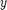
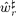
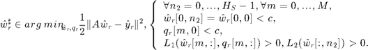
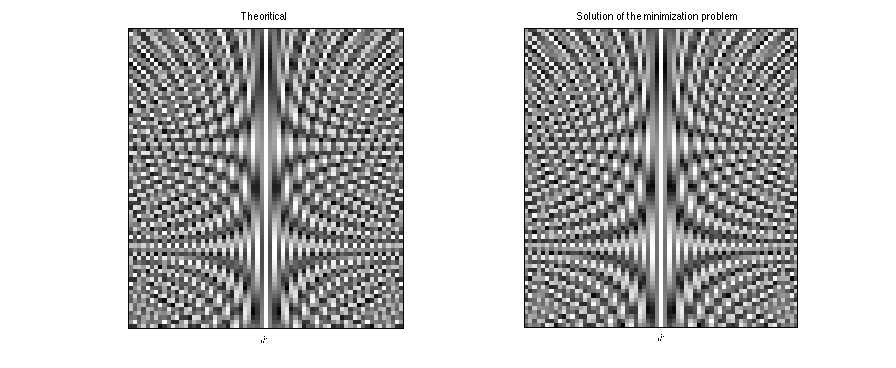
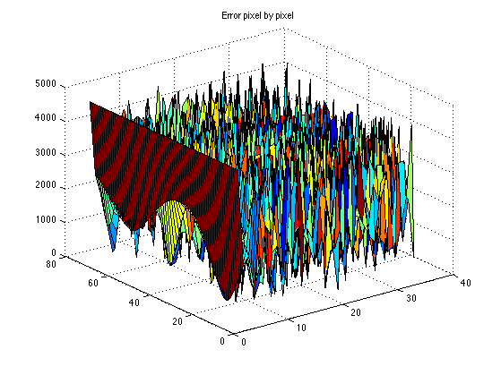
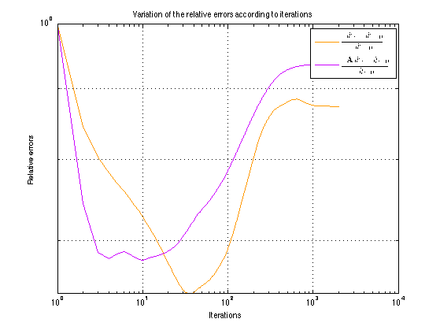

Minimization algorithm - relaxed Chambolle-Pock version
Perform a primal-dual splitting algorithm initialized with the horizontal Fourier transform of the degraded image  To compute the solution  of the optimization problem

global Gfour h hadj Hs M S T invopPQI invopPgI;
Parameters for the minimization
normLsquare=M+Hs+1; % norm of the operator L sigma=1/(tau*normLsquare); % dual step sigma computed from tau Amat=transpose(convmtx(h,H)); % matrix A_h of the convolution by h Astarmat=convmtx(flipud(hadj),H); % adjoint matrix of A_h P=tau*Astarmat*Amat; % matrix tauA_h*A_h Q=Gfour*conj(Gfour); % diagonal matrix of coef |\hat g[m]|^2 sp=size(P,1); % dimension of the square matrix P sq=size(Q,1); % dimension of the square matrix Q PQkron=kron(transpose(Q),P); % Kronecker product to resolve the opPQI=PQkron+eye(sp*sq); % system equation PXQ+X=Y, but it is invopPQI=inv(opPQI); % slower than the following method: invopPgI=cell(M+1,1); % Compute the M inverse (I+Q[m,m]P)^-1 for m=0:M invopPgI{m+1}=inv(eye(Hs)+Q(m+1,m+1)*P); end
Variables declaration
wr=zeros(Hs,M+1); % w_r optimization variable, x_n=(wr,qr) qr=zeros(Hs,M+1); % q_r optimization variable x_n=(wr,qr) yr=zeros(H,M+1); % y_r horizontal Fourier transform of the data y wr1=zeros(Hs,M+1); % x_{n+1}=(wr1,qr1) qr1=zeros(Hs,M+1); % x_{n+1}=(wr1,qr1) wr1tilde=zeros(Hs,M+1); % ~x_{n+1}=(wr1tilde,qr1tilde) qr1tilde=zeros(Hs,M+1); % ~x_{n+1}=(wr1tilde,qr1tilde) Ym=cell(M+1); % y_{i,n} for i=0..M Yn2=cell(Hs); % y_{i,n} for i=0..Hs-1 YNw=zeros(Hs,M+1); % y_{N,n}=(YNw,YNq) corresponding to \iota_E YNq=zeros(Hs,M+1); % y_{N,n}=(YNw,YNq) corresponding to \iota_E Tab=zeros(1,Nbiter+1); % Store error ||Aw_r-y_r|| for each step Tab2=zeros(1,Nbiter+1); % Store error ||w_r-wstar|| for each step
Variables initialization
% Dual variables initialization to zero for m=0:M Ym{m+1}=zeros(Hs+1); end for n2=0:Hs-1 Yn2{n2+1}=zeros(M+1); end yr=yfour(:,M+1:end); % The data fidelity term is the horizontal % Fourier transform of the degraded image y T=S; NORMW=normW(wstar(T+1:end-T,M+1:end)); % we ignore the borders % Initial relative errors if plotError Tab(1)=normW(opA(wr)-yr); Tab2(1)=normW(wr(T+1:end-T,:)-wstar(T+1:end-T,M+1:end))/NORMW; end
Primal-dual splitting algorithm
tic for iter=1:Nbiter % ~x_{n+1}=prox_{tau.G}(x_n-grad(x_n)-\sum Li*y_{i,n}) wr1tilde=wr; qr1tilde=qr; for m=0:M [wr_m,qr_m]=opadjL1(Ym{m+1}); if m==0 wr_m=real(wr_m); wr1tilde(:,m+1)=wr1tilde(:,m+1)-tau*2*wr_m; else wr1tilde(:,m+1)=wr1tilde(:,m+1)-tau*wr_m; end qr1tilde(:,m+1)=qr1tilde(:,m+1)-tau*qr_m; end for n2=0:Hs-1 wr_n2=opadjL2(Yn2{n2+1}); wr1tilde(n2+1,:)=wr1tilde(n2+1,:)-tau*wr_n2; end % -L_N*y_{N,n}=-Id*.(YNw,YNq) wr1tilde=wr1tilde-tau*YNw; qr1tilde=qr1tilde-tau*YNq; % prox_taug wr1tilde=proxtaugmat2(wr1tilde+tau*opadjA(yr),tau); % x_{n+1}=rho*~x_{n+1} + (1-rho)*x_n wr1=rho*wr1tilde+(1-rho)*wr; qr1=rho*qr1tilde+(1-rho)*qr; % y_{i,n+1}=rho*prox_{sigma*Hi*}(y_{i,n}+sigma*Li(2~x_{n+1}-x_n))+(1-rho)*y_{i,n} diffw=2*wr1tilde-wr; diffq=2*qr1tilde-qr; for m=0:M Ym{m+1}=rho*proxsigmahconj(Ym{m+1}+... sigma*opL1(diffw(:,m+1),diffq(:,m+1)),sigma)+(1-rho)*Ym{m+1}; end for n2=0:Hs-1 Yn2{n2+1}=rho*proxsigmahconj(Yn2{n2+1}+... sigma*opL2(diffw(n2+1,:)),sigma)+(1-rho)*Yn2{n2+1}; end [YNwtilde,YNqtilde]=proxsigmahNconj(YNw+sigma*diffw,... YNq+sigma*diffq,sigma,c); YNw=rho*YNwtilde+(1-rho)*YNw; YNq=rho*YNqtilde+(1-rho)*YNq; % update wr=wr1; qr=qr1; if plotError % store the relative errors at this step Tab(iter+1)=normW(opA(wr)-yr); Tab2(iter+1)=normW(wr(T+1:end-T,:)-wstar(T+1:end-T,M+1:end))/NORMW; end % display current iteration step if displayIter && mod(iter-1,Nbiter/100)==0 iter %Tab2(iter) end end
Time execution:
toc
Elapsed time is 255.391501 seconds.
Display the results
wrsym=[fliplr(conj(wr(:,2:end))) wr]; % extend symetrically xx = 1 : 1 : M+1; % define a 2D grid (xx,yy) yy = 1 : 1 : Hs; % for a 3D representation [X,Y] = meshgrid(xx,yy); % of the error pixel by pixel if plotError % Compare the images of the solution of the algorithm and the theoric f=figure; subplot(1,2,1); imagesc(abs(wstar)); colormap gray; axis image; title('Theoritical'); xlabel('$$\hat w^{\sharp}$$','Interpreter','latex'); set(gca,'xtick',[],'ytick',[]); subplot(1,2,2); imagesc(abs(wrsym)); colormap gray; axis image; title('Solution of the minimization problem'); xlabel('$$\hat w$$','Interpreter','latex'); set(gca,'xtick',[],'ytick',[]); truesize(f,[300 300]); % Plot the error pixel by pixel figure; surf(X,Y,abs(wstar(:,M+1:end)-wr)); title('Error pixel by pixel'); % Plot the variation of the norm error at each iteration figure; loglog(1:iter,Tab2(1:iter),'Color',[1 0.6 0],'Linewidth',1.5); grid on; hold on; loglog(1:iter,Tab(1:iter)/normW(yr),'Color',[0.8 0 1],'Linewidth',1.5); set(gcf,'color','w'); set(gca,'XMinorGrid','Off'); xlabel('Iterations'); ylabel('Relative errors'); title('Variation of the relative errors according to iterations'); legend({'$$\frac{\|\hat w_r-\hat w^{\sharp}\|_{\mathcal{W}}}{\|\hat w^{\sharp}\|_{\mathcal{W}}}$$','$$\frac{\|\mathbf{A}\hat w_r-\hat y_r\|_{\mathcal{W}}}{\|\hat y_r\|_{\mathcal{W}}}$$'},'Interpreter','latex'); %print -depsc essai_fig2.eps %fixPSlinestyle('essai_fig2.eps','essai_fig_fixed.eps') end  